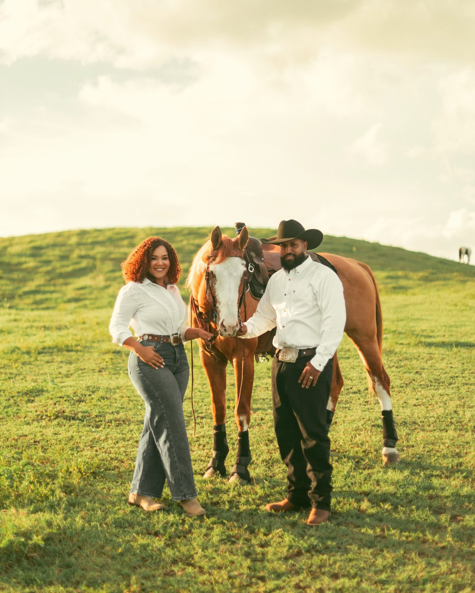
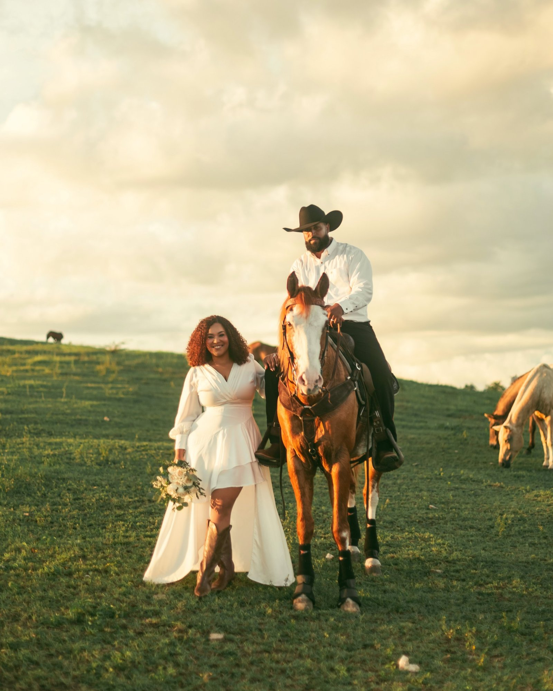
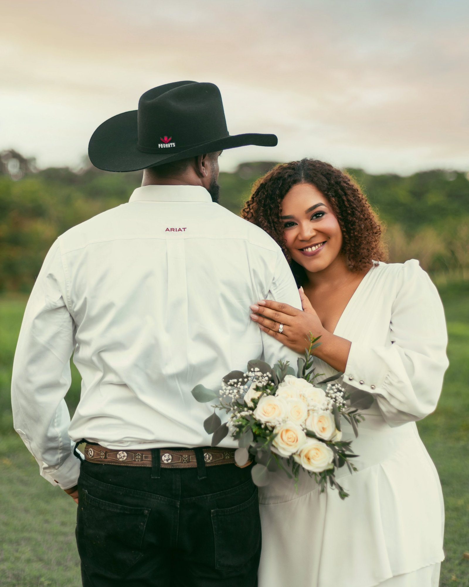
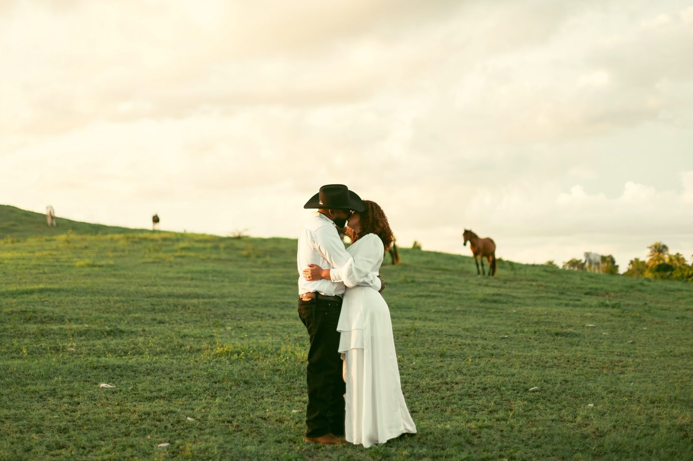

La recepción será en el mismo lugar · Boda tipo cóctel
Nuestros Momentos
Un pedacito de nuestra historia antes del gran día.




Itinerario
Así viviremos juntos esta tarde tan especial.
Ceremonia religiosaNuestra unión bajo la bendición de Dios.
Recepción tipo cóctelEn el mismo lugar de la ceremonia.
Bocadillos y bebidasCompartir y celebrar juntos.
Brindis de los noviosCelebramos juntos nuestro amor.
Lanzamiento del ramoBuenos deseos para la próxima novia.
¡A bailar!Música, baile y mucha diversión.
Detalles
Hagamos juntos una fiesta épica. Aquí algunos detalles a tener en cuenta.
Código de Vestimenta
Boda tipo cóctel
Después de la ceremonia celebraremos juntos con un cóctel de bocadillos y bebidas en el mismo lugar.
¡Te esperamos!
Celebración solo para adultos
Amamos a sus pequeños, pero hemos preparado con mucho cariño esta celebración solo para adultos. Les pedimos con cariño que en esta ocasión los niños se queden en casa.
¡Gracias por su comprensión!
Regalos
Si deseas hacernos un regalo, puedes contribuir a nuestro fondo de recién casados.
Su Invitación
0
Agradecemos de corazón su comprensión.
Confirma tu Asistencia
Por favor confírmanos tu asistencia con anticipación